KREATORS EVENT MANAGEMENT
HOME | ABOUT US | CONTACT US
About us:
If you’re planning low budget Wedding celebration, Birthday party, Get-together look no further than Kerators Events. The small team, led by Aravindhan, specializes in bringing an element of surprise to the most elegant of events.
Complete Wedding package list:
Photograph and videography
Return gifts
Stage Decoration
DJ Musics
Dinner and Breakfast
Full Bridal and Groom makeup
Photography and vidoegraphy
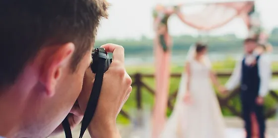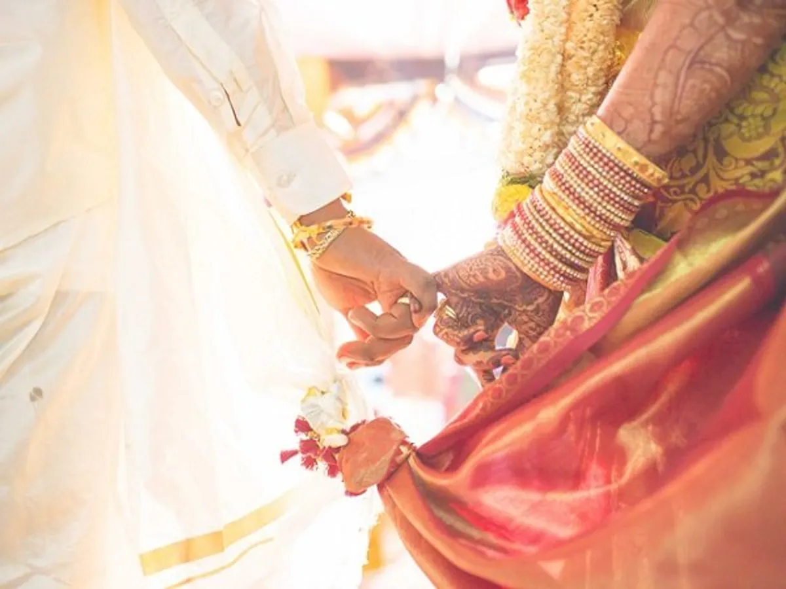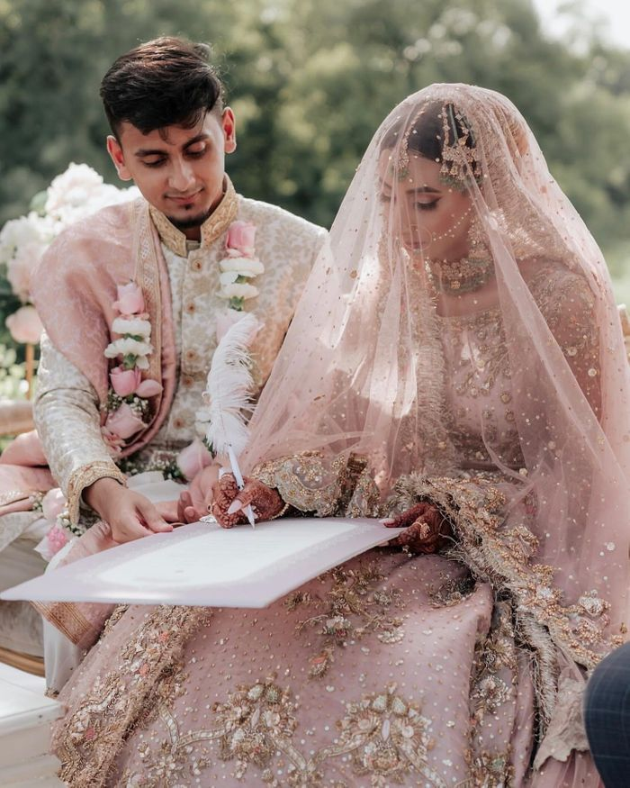
It’s at that precise moment that mastering an image becomes a great physical and intellectual joy.Your wedding images help tell the story of your wedding day, from the moment you begin to prepare for the day up to the end of your wedding reception. Having wedding photography allows you to have the entire story of your wedding day documented forever.To photograph is to hold one’s breath, when all faculties converge to capture fleeting reality.
Stage Decoration
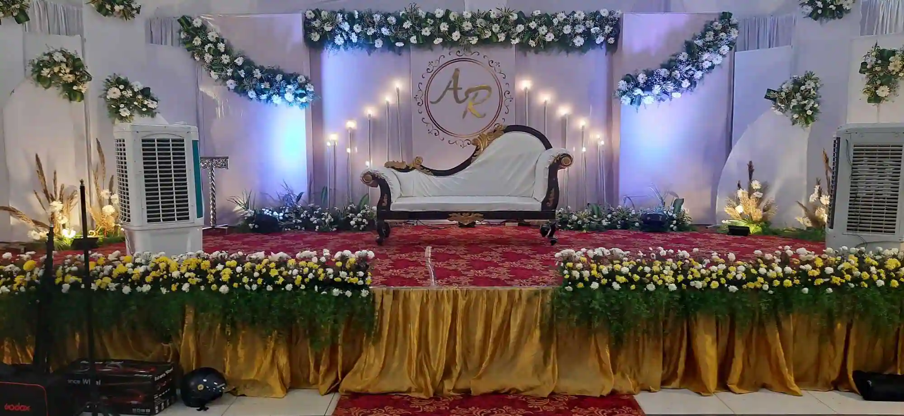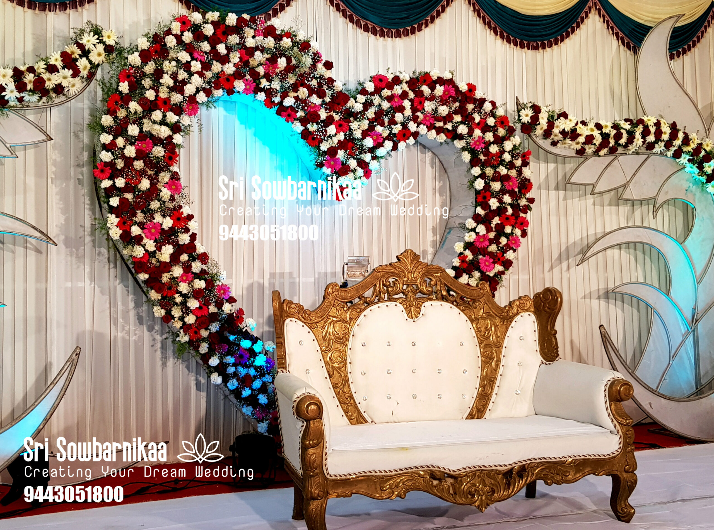
This dedicated area needs a lot of planning and perfection because unique or not, wedding stage decoration can make your event extra special and exquisite. So are looking for the most captivating wedding stage decoration ideas to make your wedding all the more gorgeous? Then take a look at some of the latest and trending wedding stage decor ideas that we have cherry-picked for you to add luxurious aesthetics to your magnificent wedding.
DJ Musics
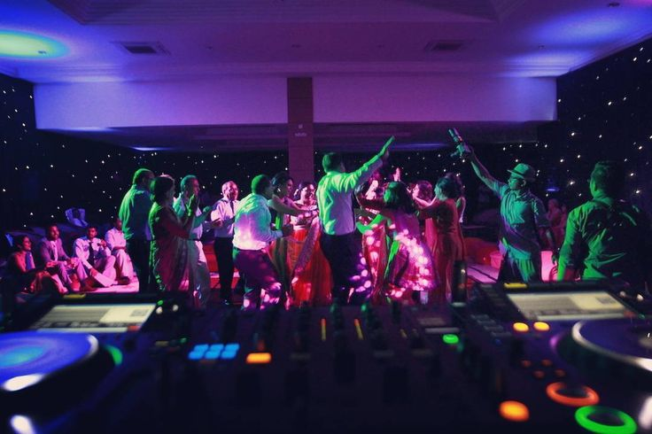
Music is a crucial element at a wedding reception. It sets the mood and creates a joyful atmosphere, keeping guests entertained. A DJ or professional emcee services can help with adjusting the music to the crowd's preferences and handling announcements and coordination of formal events.
Dinner And Breakfast
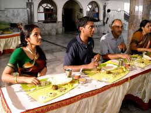
One of the biggest factors that goes into selecting your food options for a wedding is the time of day your reception is. The time can dictate what type of food you serve, from a full meal to just appetizers and hors d’oeuvres.
You may want your guests to get up and mingle instead of feeling tied to their table eating a full meal — to encourage this, you might decide to serve smaller plates such as appetizers and hors d’oeuvres. This may seem like a good idea in theory, but if you are asking friends and family to join you during a “meal time,” it is highly recommended to serve a full meal instead of snacks. It’s no fun being hungry and you would not want your guests to leave early because they need to eat!
Bridal and Groom Makeup
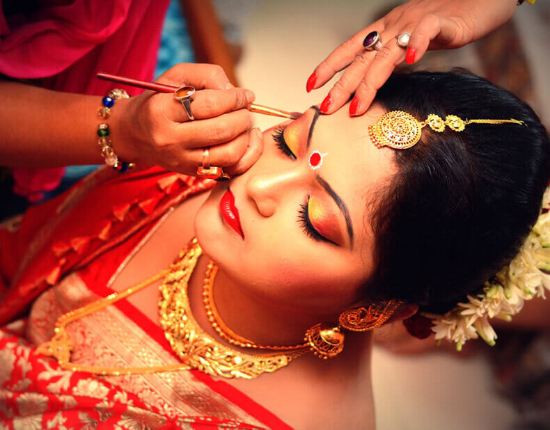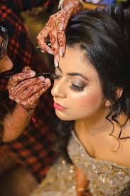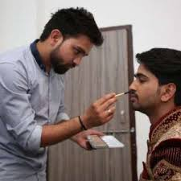
Bridal makeup should reflect your personality (your wedding is a milestone, not a frequent life occurrence), complement your outfit (obviously), and most importantly, stay put through the entire ceremony and the photographs.
Return Gifts
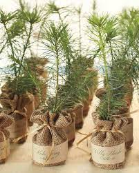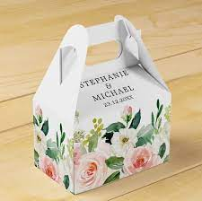
Gifts are the best way to show someone you care. Giving someone a gift shows gratitude and appreciation for them, their time, and the effort spent on your big day. A return gift is a token of gratitude towards your guests for sharing the most important day of your life. It shows how much you care about them!
Contact:7904523043
email-id:kreatorscorp@gmail.com